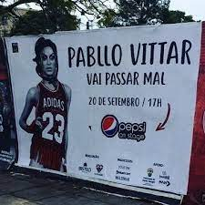

Aqui você pode ver alguns do memes icônicos
que fizeram parte da história da drag.
Os memes relacionados a vídeos podem ser melhor aproveitados,
clique na imagem do meme que você quer ver e de boas
risadas com esses vídeos
Alô, Eu sou a Pabllo
Após o lançamento de seu álbum “Batidão Troprical” com a música
“Ultra Som” um canal no YouTube decide pegar trechos da música
para pregar uma pegadinha com uma mulher chamada Bete. E ao desenrolar
do vídeo, a conversa acaba gerando diversos momentos divertidos e
dignos de boas gargalhadas, tendo direito a até xingamentos, muita
confusão e revolta pela parte da injustiçada Bete que acabou sendo
vítima de uma piada.
Vai passar mal

Durante uma turnê de lançamento do seu primeiro álbum “Vai Passar Mal”
que foi, infelizmente, cancelada uma foto foi postada no twitter com a
premissa de que na verdade o cartaz era um sinal de que no dia 20 de setembro,
as 17 horas, a cantora Pabllo Vittar iria passar mal, desde então ao longo
dos anos seguinte os vittar lovers inundam o twitter prestando compaixão pela
possível recaída da artista. Até o presente momento a artista segue com a
saúde boa, mas quem pode saber se ela vai passar mal no próximo ano ou não?
YUKÊ!
Em meio ao vídeo sátira de uma das marcas da Pabllo, o famoso ‘YUKÊ’.
O youtuber rizzih grava um vídeo brincando com o jeito de agir diferente
da cantora de num show de caricaturas ele cita um suposto gato chamado
yukê que vive sumindo (sempre dando trabalho) e então ele sai pelos
cantos da casa, e até pela rua, gritando o nome de seu pobre animal que
vive sumindo: “YUKÊÊÊÊ!!
Durante o show de posse do atual presidente Lula, onde Pallo Vittar
foi uma das atrações, ocorreu um breve momento onde a artista decide
fazer um discurso em homenagem ao presidente, entretanto por conta do
cansaço provindo de suas performances no palco durante o discurso a
voz de Pabllo desafina ficando semelhante a voz do famoso camundongo
da Disney, o Mikey Mouse.